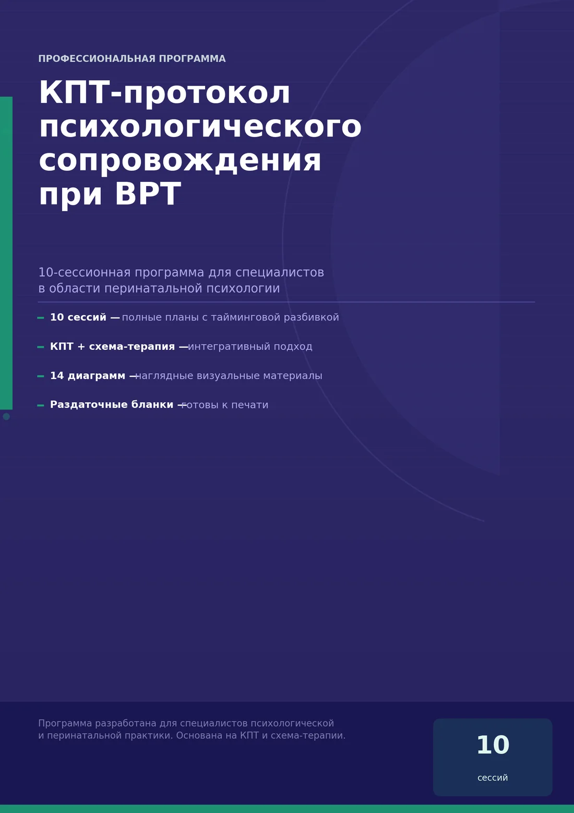

Для специалистов
КПТ-протокол при ВРТ
10-сессионное сопровождение женщин в процессе ВРТ: КПТ второй и третьей волны, элементы схема-терапии и системный подход. Для клинических, перинатальных и репродуктивных психологов, а также врачей, которые работают с ВРТ.
- 10 сессийпо 50–60 минут
- 79 страницPDF для печати
- 14 диаграмми готовые бланки
Что внутри — по сессиям
- Психообразование и КПТ-модель.
- Стресс-цикл ВРТ и хроническая неопределённость.
- Убеждения о теле и вине.
- Катастрофизация и магическое мышление.
- Схема-терапия: работа с режимами.
- Период ожидания.
- Отношения и коммуникация.
- Вина и стыд в социальных ситуациях.
- Смыслы, ценности и неопределённость.
- Завершение протокола.
Плюс intake-лист, кризисный протокол при отрицательном результате, бланки для клиенток и памятка для пациентки.
10 000 ₽PDF · 79 страниц
Оплата в боте картой на странице Робокассы. После оплаты PDF придёт в чат, и его можно будет скачать снова.
Купить за 10 000 ₽Методический материал для специалистов: не заменяет супервизию, личную терапию и клиническое обучение. Оплата и возврат — по документу «Оплата, возврат и реквизиты» в боте.